Non-Carbon Fuel Combustion & Co-firingPembakaran Bahan Bakar Non-Karbon & Co-firing非炭素燃料燃焼・混焼
Hydrogen, ammonia, biomass and bio-liquid fuels in flames, boilers, gas turbines and engines, alone or co-fired with coal, gas and diesel.Hidrogen, amonia, biomassa, dan bahan bakar cair nabati pada nyala, boiler, turbin gas, dan mesin, baik murni maupun co-firing dengan batubara, gas, dan diesel.水素、アンモニア、バイオマス、バイオ液体燃料を、単独または石炭・ガス・軽油との混焼で、火炎・ボイラ・ガスタービン・エンジンにおいて研究します。
What we studyApa yang kami teliti研究内容
Co-flow, swirl and constant-volume flamesNyala co-flow, swirl, dan volume konstan同軸流・旋回・定容火炎
Our co-flow diffusion burner, metered by mass-flow controllers and analysed by gas chromatography, maps stability and NO for NH₃/H₂/CH₄ blends. A multi-cluster swirl burner reproduces gas-turbine-like conditions, and an optical constant-volume chamber captures ignition and flame propagation.Burner difusi co-flow kami, dengan mass-flow controller dan analisis kromatografi gas, memetakan kestabilan dan NO campuran NH₃/H₂/CH₄. Burner swirl multi-klaster meniru kondisi turbin gas, dan ruang bakar volume konstan optik merekam penyalaan dan perambatan nyala.マスフローコントローラで制御しガスクロマトグラフで分析する同軸流拡散バーナにより、NH₃/H₂/CH₄混合気の安定性とNOを計測。マルチクラスタ旋回バーナはガスタービンに近い条件を再現し、光学定容燃焼容器で着火と火炎伝播を撮影します。
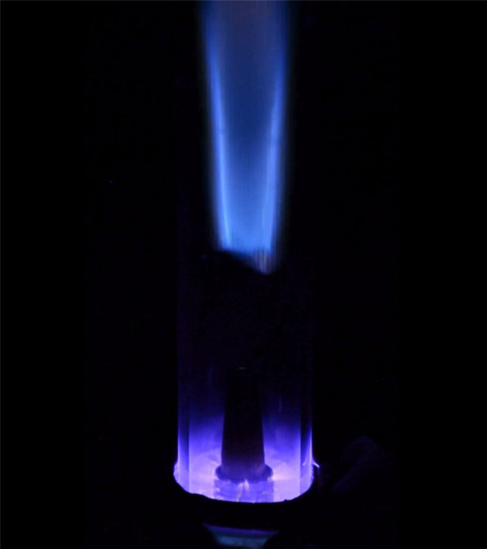
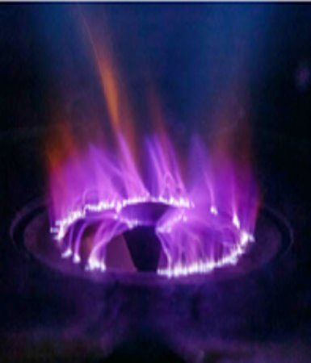
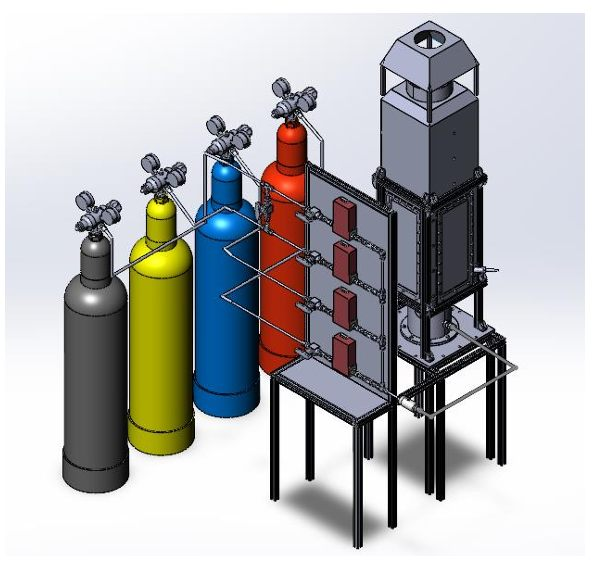
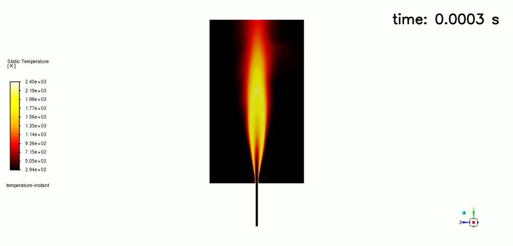
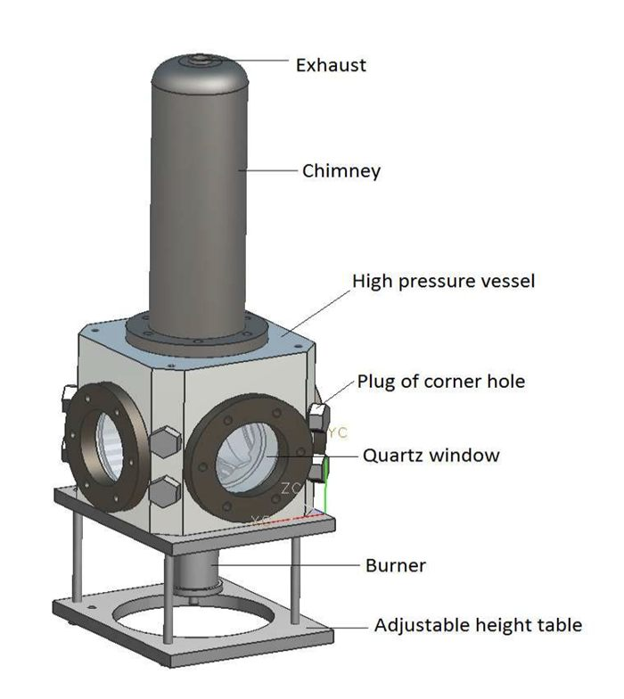
Co-firing ammonia and biomass in utility boilersCo-firing amonia dan biomassa di boiler utilitas大型ボイラでのアンモニア・バイオマス混焼
CFD models of subcritical and ultra-supercritical pulverized-coal boilers quantify how co-firing ratio, injection location, air staging and flue gas recirculation change furnace temperature, heat absorption, unburned ammonia and NOx. Experiments in a 60 kWth boiler simulator add ash deposition and slagging data for coal–biomass–ammonia blends.Model CFD boiler batubara serbuk subkritis dan ultra-superkritis mengukur pengaruh rasio co-firing, lokasi injeksi, air staging, dan resirkulasi gas buang terhadap temperatur tungku, penyerapan panas, amonia tak terbakar, dan NOx. Eksperimen di simulator boiler 60 kWth menambahkan data deposisi abu dan slagging untuk campuran batubara–biomassa–amonia.亜臨界・超々臨界微粉炭ボイラのCFDモデルで、混焼率、噴射位置、二段燃焼、排ガス再循環が炉内温度、熱吸収、未燃アンモニア、NOxに与える影響を定量化。60 kWthボイラシミュレータで石炭・バイオマス・アンモニア混焼の灰付着・スラッギングデータを取得します。
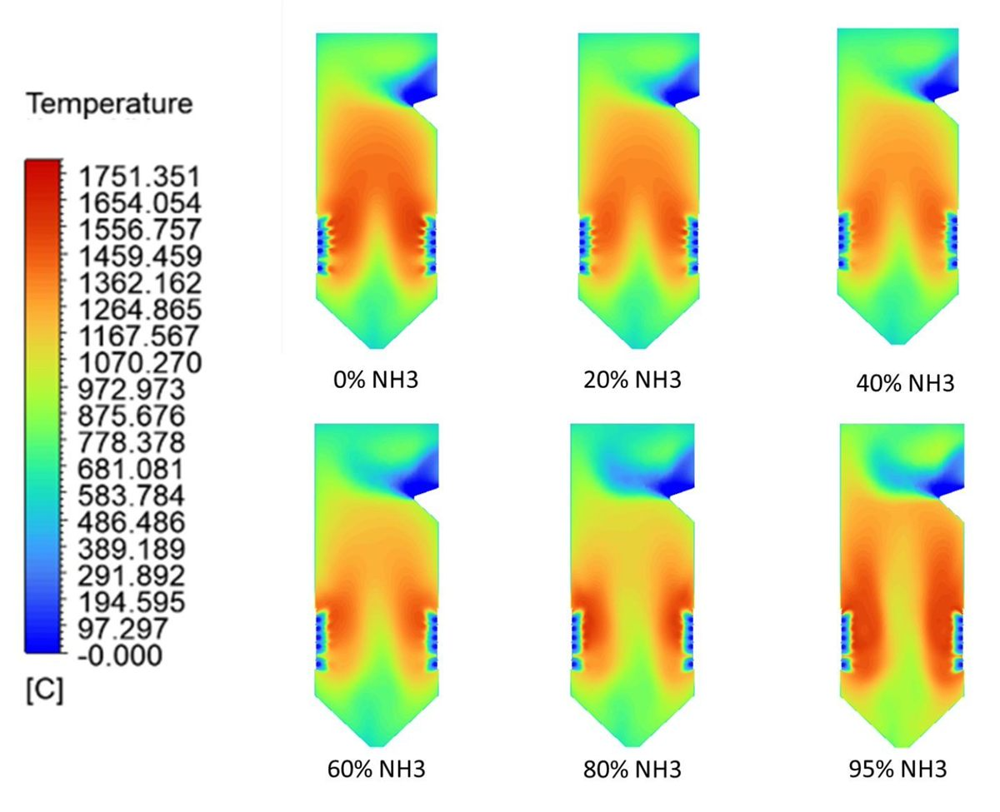
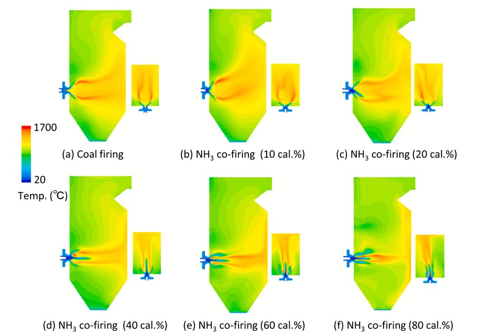
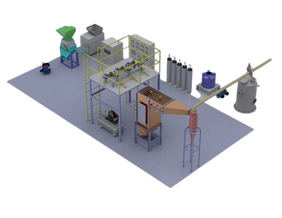
Hydrogen and bio-liquids in engines and gas turbinesHidrogen dan cairan nabati pada mesin dan turbin gasエンジン・ガスタービンでの水素・バイオ液体燃料
Thousands of diesel gensets power Indonesia's remote islands. We test hydrogen dual-fuel operation on a diesel engine with a load bank, model H₂ enrichment in gas engines, and study sprays of pure palm oil and biodiesel. For gas turbines, combustor CFD and cycle models evaluate hydrogen co-firing performance and emissions.Ribuan genset diesel menyuplai listrik pulau-pulau terpencil Indonesia. Kami menguji operasi dual-fuel hidrogen pada mesin diesel dengan load bank, memodelkan pengayaan H₂ pada mesin gas, dan meneliti semprotan minyak sawit murni dan biodiesel. Untuk turbin gas, CFD combustor dan model siklus menilai kinerja dan emisi co-firing hidrogen.インドネシアの離島では数千台のディーゼル発電機が稼働しています。負荷装置付きディーゼルエンジンで水素デュアルフューエル運転を試験し、ガスエンジンの水素富化をモデル化し、純パーム油・バイオディーゼルの噴霧を研究します。ガスタービンでは燃焼器CFDとサイクル解析で水素混焼の性能と排出を評価します。
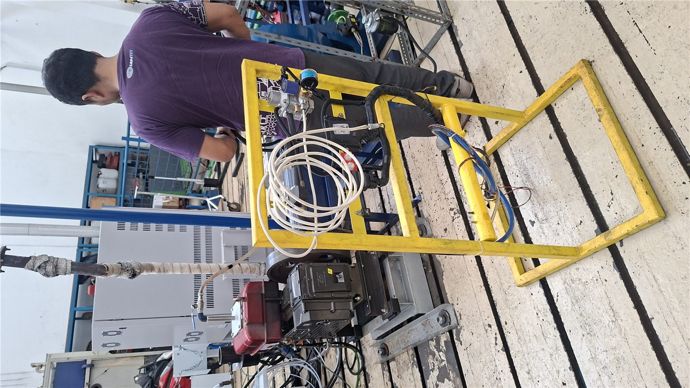
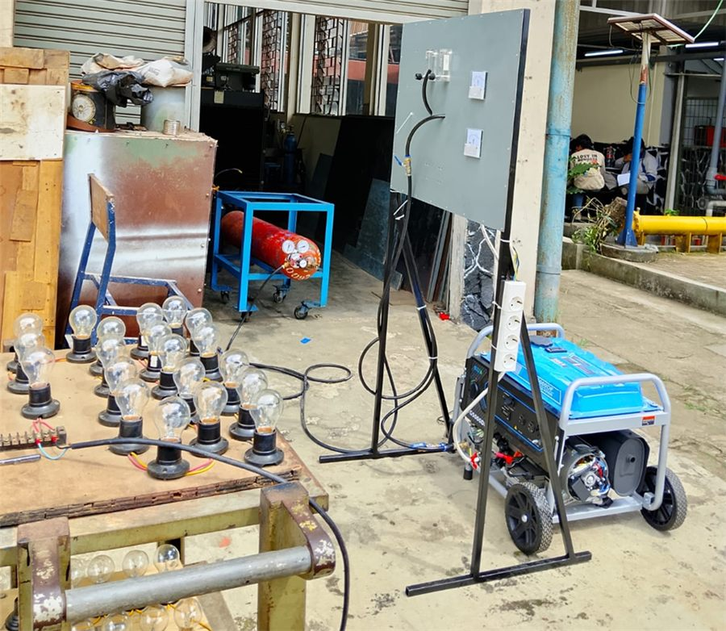
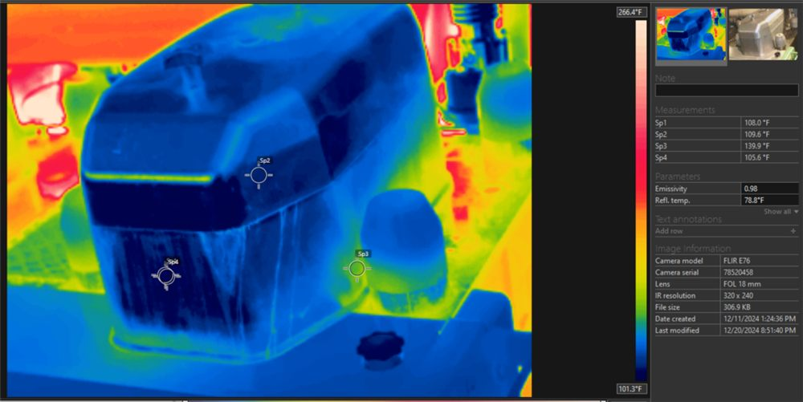
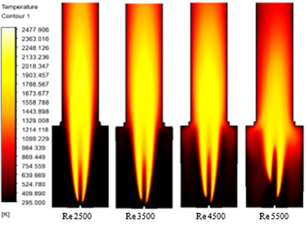
Researchers in this themePeneliti di tema iniこのテーマの研究者
Selected publicationsPublikasi terpilih主な論文
Related research projectsProyek riset terkait関連研究課題
Recent student thesesTesis mahasiswa terbaru最近の学位論文
Interested in this theme?Tertarik dengan tema ini?このテーマに興味がありますか？
See example topics for students, or talk to us about a joint project.Lihat contoh topik untuk mahasiswa, atau diskusikan proyek bersama.学生向けテーマ例を見る、または共同研究をご相談ください。